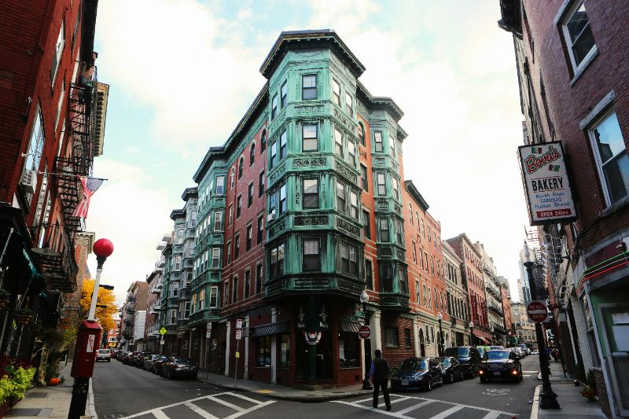
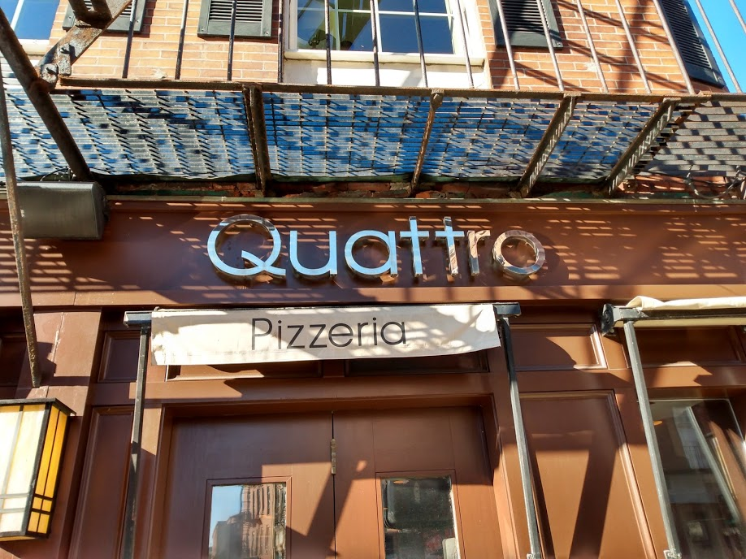
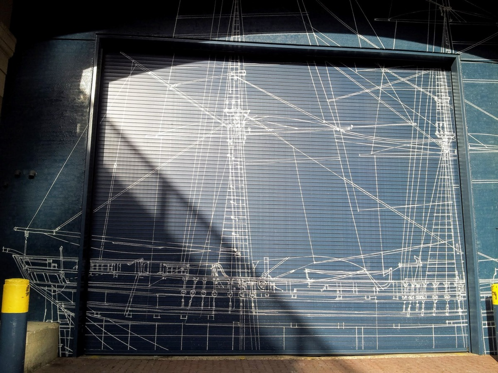
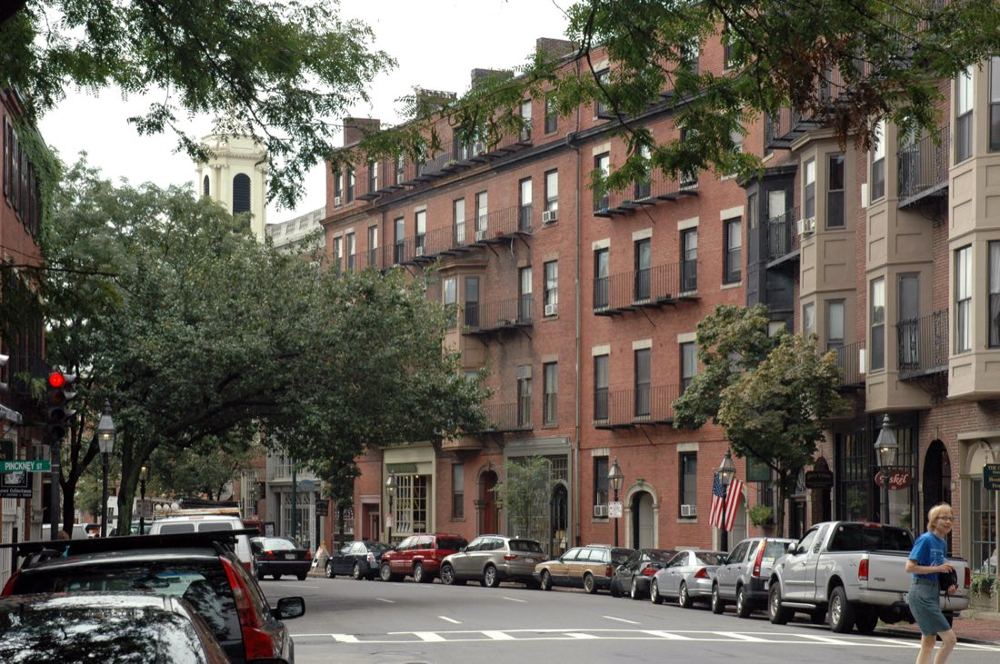

The best lobster roll in Boston. Hot, cold, and worth the $40.
Twelve real lobster rolls in Boston and Cambridge, ranked by locals, with the hot-versus-cold question settled, honest prices, addresses and the nearest T stop for each.
Rolls12
Hot butter6
From$20

North End Salem Street, two blocks of lobster rollsSeaport & waterfront Where the lobster comes in
Every visitor to Boston asks the same question, and every local has a different answer. The best lobster roll in Boston is not one roll. It depends on whether you want it hot with butter or cold with mayo, whether you care about a harbor view, and whether you are willing to wait 45 minutes on Salem Street for a roll that costs as much as a nice dinner. This guide answers all of that, and it names names.
We ate our way through 12 lobster rolls across the North End, the Seaport, Back Bay, the South End and Cambridge. Each entry below lists the address, the nearest T stop, whether the place does hot, cold or both, and what you should expect to pay. Prices change with the lobster market, sometimes week to week, so treat every number here as a range and check the menu before you commit.
One honest note before you start: a lobster roll in Boston in 2026 costs $30 to $45 at most restaurants. That is a lot for a sandwich. It is also a quarter pound or more of fresh lobster, and when it is done well it is one of the best things you can eat in New England. We also point out the cheaper ways in, because a good roll should not be only for people on expense accounts.
01 · The debate
Hot vs cold lobster rolls, explained
There are two lobster rolls, and the argument between them is older than most of the restaurants on this list. The cold roll, usually called Maine-style, is chilled lobster meat lightly bound with mayonnaise, sometimes with a little celery, lemon or chives, served in a toasted split-top hot dog bun. The hot roll, usually called Connecticut-style, is warm lobster meat tossed in melted butter and piled into the same bun with nothing else. That is the whole difference: mayo and cold, or butter and warm.
Purists on both sides will tell you the other one is wrong. Ignore them. The cold roll is cleaner and lets you taste the sweetness of the lobster, which is why it is the better first lobster roll. The hot roll is richer, messier and more indulgent, and once you have had a good one it is hard to go back. Boston sits between Maine and Connecticut, geographically and culturally, so most of the better places here offer both. Neptune Oyster made the hot buttered roll famous in Boston; James Hook and Yankee Lobster represent the cold, no-nonsense wholesaler tradition.
Two things matter more than the style. The first is the bun: it must be a New England split-top roll, buttered and griddled on the flat sides until golden. A round bun or an untoasted one is a red flag. The second is the meat: knuckle and claw meat is sweeter and more tender than tail, and a good roll uses mostly knuckle and claw, with tail pieces for show. If you can see lettuce, celery chunks or a lot of white sauce, someone is stretching the lobster.
A good roll holds roughly four to six ounces of meat. That is why the prices are what they are: a pound of picked lobster meat wholesales for far more than a pound of almost anything else in the kitchen. When a restaurant lists the roll at market price, that is not a trick, it is the price of lobster that week.
This is exactly the kind of argument worth settling over a long indoor lunch. More ways to spend a wet afternoon in Boston in our rainy day guide.
02 · Best overall
The best lobster rolls in Boston overall
If you are only having one lobster roll in Boston, have one of these four. Each is the best in the city at its own style.
Neptune's marble bar is exactly the kind of low-key splurge that also works for a first date — more ideas in our Boston date-ideas guide.
03 · Best cheap
The best cheap lobster rolls in Boston
"Cheap" is relative with lobster. These are the rolls that come in under $30 without cheating on the meat, and they are among the best in the city regardless of price.
Lobster rolls in the North End and on the waterfront
The North End is an Italian neighborhood, not a seafood one, but Salem Street happens to have two of the most famous lobster rolls in the city within a block of each other, and the harbor is a five-minute walk away.

Hanover & Salem Street
01
The famous one
Neptune Oyster (hot buttered)
63 Salem St, North EndAbout $40–45, market priceTHaymarket (Orange/Green)Hot butter available
Neptune Oyster is the reason people talk about hot buttered lobster rolls in Boston. The room is tiny, maybe 40 seats and a marble bar, and the line on Salem Street starts before the door opens. The roll comes two ways: cold with mayo, or hot with butter, and the hot one is the famous one. Warm knuckle and claw meat, a lot of it, in a brioche-style bun that has been buttered and griddled until it is almost crisp, with a pile of fries. It is expensive, it is worth it, and it is the standard every other roll in this guide is measured against.
Hours Daily from 11:30am; no reservations
Local tip · Go at 11:15am on a weekday and you will be in the first seating. The wait on a Saturday afternoon regularly passes an hour. Put your name down, then walk two blocks to the Paul Revere House while you wait.
#1
02
No frills
James Hook & Co (cold)
440 Atlantic Ave, WaterfrontAbout $30–40, market priceTSouth Station (Red/Silver)Cold only
James Hook has been selling lobster on the Boston waterfront since 1925, mostly to restaurants and by the pound. The retail counter is where locals go for a cold roll with no theatre: chilled lobster, barely dressed, in a toasted bun, handed to you in a paper tray. There is no dining room. You eat it on the benches outside with a view of the Fort Point Channel and the Seaport bridges, which is the correct way to eat a lobster roll. Rolls come in a couple of sizes; the regular is plenty. The outdoor benches face the Fort Point Channel and the Seaport skyline, and the roll costs less than anything else on this page with a comparable view.
Hours Counter service; check hours before you go
Local tip · It is a five-minute walk from South Station along Atlantic Avenue, which makes it the best lobster roll to grab on the way to a train.
#2
03
The giant one
Pauli's (the giant one)
65 Salem St, North EndRegular roll about $30–35; the giant one considerably moreTHaymarket (Orange/Green)Hot butter available
Pauli's is a sandwich shop next door to Neptune Oyster, and it built its reputation on a lobster roll with two pounds of meat in it. It is called the Lobstitution, it feeds three or four people, and it is genuinely enormous. The regular lobster roll is more sensible: cold, simply dressed, on a toasted bun, and served fast with no wait, which on a Saturday is a real advantage over its neighbor. Pauli's also does a warm butter version and, famously, some of the best arancini in the North End.
Hours Counter service, daily
Local tip · If the Neptune line is over an hour, Pauli's is the honest fallback. It is not the same roll, but it is a good one, and you will have it in ten minutes.
#9
04
Harbor deck
Boston Sail Loft
80 Atlantic Ave, WaterfrontAbout $30–35, market priceTAquarium (Blue)Cold only
The Sail Loft is an old-school waterfront bar on the edge of the North End with a deck that hangs directly over the harbor. The lobster roll is cold and classic, the clam chowder is one of the best in the city, and the whole thing costs less than the Seaport restaurants across the water. It has been here for decades, it is unpretentious, and on a summer evening the deck is one of the nicest places in Boston to sit with a beer.
Hours Lunch and dinner daily
Local tip · Ask for the deck. Inside is fine, but the view is the point, and the deck seats go first.
#10
Together, Neptune, James Hook, Pauli's and the Sail Loft make the North End the densest lobster-roll cluster in the city — the walk from Salem Street down to the Sail Loft on Atlantic Avenue takes about seven minutes through the Greenway, and all of it sits a few minutes from the Paul Revere House. Everything else worth eating there is in our North End guide.
06 · Seaport & Fort Point
Lobster rolls in the Seaport and Fort Point
The Seaport is where Boston's fishing fleet still lands, on the Fish Pier at the end of Northern Avenue, so it makes sense that the neighborhood has more lobster rolls per block than anywhere else.

The Harborwalk, Seaport
A good afternoon: start with a roll at James Hook, walk across the Seaport Boulevard bridge and along the Harborwalk past the ICA, and finish with oysters at Row 34 or a drink on the Harborside roof. The whole walk is about 25 minutes. The Silver Line SL1 and SL2 from South Station stop at Courthouse, World Trade Center and Silver Line Way, which covers all of these. James Hook sits at the Downtown end of the Seaport bridges, so it belongs to this cluster too — see it above.
05
Groups & oysters
Row 34
383 Congress St, Fort PointAbout $35–45, market priceTSouth Station (Red/Silver) or Courthouse (Silver)Hot butter available
Row 34 calls itself a workingman's oyster bar, which undersells the room: a big, loud, converted warehouse space in Fort Point with one of the best beer lists in the city. The lobster roll is cold, lightly dressed, and served on a properly toasted split-top bun with a pile of chips. They also do a warm butter version. Because the same owners run the Island Creek oyster farm in Duxbury, the oysters are the real draw, and a half dozen plus a roll is the ideal order. Good for groups, and easy to combine with a walk on the Harborwalk afterward.
Hours Lunch and dinner; reservations recommended
#4
06
Working seafood co.
Yankee Lobster
300 Northern Ave, SeaportAbout $30–35, market priceTSilver Line Way (SL1/SL2)Hot butter available
Yankee Lobster is a working seafood company on the far end of the Seaport with a takeout counter and a few tables. The roll is cold, generous, and priced a few dollars under the restaurants nearby. You can also get it hot with butter. It is out past the convention center, which keeps it more local than the polished Seaport spots, and it is a reliable place to bring someone who wants a proper roll without a reservation.
Hours Counter service; check hours
#6
07
Rooftop view
Legal Sea Foods Harborside
270 Northern Ave, SeaportAbout $35–45, market priceTSilver Line Way (SL1/SL2)Cold only
Legal Sea Foods is the Boston seafood chain, and Harborside is its flagship: three floors on the water in the Seaport with a rooftop deck that looks across the harbor to East Boston and the airport. The roll is a solid cold classic, and the chowder is the one served at presidential inaugurations. You are paying partly for the view, but the view is big, and it is the easiest place on this list to bring a group or a family without planning.
Hours Three floors; rooftop seasonal
What to skip: the Seaport also has a number of large, newer restaurants where a lobster roll is on the menu because tourists expect it. Stick to the three above. If you're watching what you spend while you're out there, pair this with our guide to Boston on a budget. More on the neighborhood in our Seaport guide.
07 · Back Bay, South End & Cambridge
Lobster rolls in Back Bay, the South End and Cambridge
Away from the water, the rolls get more polished and the rooms get nicer. These are the ones worth a detour.

Back Bay
08
Tinned fish & wine
Saltie Girl
281 Dartmouth St, Back BayAbout $40–45, market priceTCopley (Green)Hot butter available
Saltie Girl is a small seafood bar off Newbury Street with a serious tinned-fish list and a lobster roll that competes with Neptune's. They do both styles: a cold roll with lemon aioli, and a warm butter roll. What sets it apart is the bun, which is griddled with a lot of butter, and the portion, which is generous. It is a good choice if you want the roll as part of a longer meal with oysters and a glass of wine rather than a quick lunch on a bench.
Hours Lunch and dinner; reservations recommended
#3
09
Fast counter
Luke's Lobster, Back Bay
75 Exeter St, Back BayAbout $25–30, market priceTCopley (Green)Cold only
Luke's is a Maine-based chain, and it is on this list because the roll is consistently good and consistently cheaper than the restaurants around it. The style is Maine: chilled lobster, a swipe of mayo on the bun, a drizzle of lemon butter and a shake of seasoning. It comes in half and full sizes. The Back Bay shop is a few steps from the Boston Public Library, so it is the easy lunch stop between Copley Square and Newbury Street.
Hours Counter service, daily
10
Patio lunch
B&G Oysters
550 Tremont St, South EndAbout $40–45, market priceTBack Bay (Orange/Commuter Rail), 10-min walkCold only
B&G is Barbara Lynch's oyster bar in a below-street-level room on Tremont Street, with a small patio out back that is one of the South End's best-kept secrets. The lobster roll is cold, dressed with a light mayo and served on a buttered, toasted bun with fries, and it has been one of the most consistent rolls in the city for two decades. Pair it with a half dozen oysters and a glass of white wine and you have the ideal South End lunch.
Alive & Kicking is a lobster shack on a residential street in Cambridgeport that sells live lobsters and, at a counter in the corner, a "lobster sandwich": a very generous pile of cold lobster meat between two slices of toasted white sandwich bread instead of a hot dog bun. Technically that makes it not a lobster roll. Practically, it is one of the best-value plates of lobster in Greater Boston, and the picnic tables outside are as low-key as it gets. Bring cash in case, and check the hours before the walk.
Hours Lunch and early dinner; check hours, closed some days
#7
12
Best value
Eventide Fenway (brown butter lobster roll)
1321 Boylston St, FenwayAround $20, check the boardTFenway (Green D) or Kenmore (Green B/C/D)Warm brown butter
Eventide is the Boston outpost of the Portland, Maine, oyster bar, and its brown butter lobster roll is the most interesting roll on this list. Warm lobster in nutty brown butter vinaigrette, served in a soft steamed Chinese-style bun instead of a split-top. It is smaller than a full restaurant roll, which is why it costs about half as much, and the flavor is so good that most people order two. Counter service, fast, and a two-minute walk from Fenway Park.
Hours Counter service, daily
Local tip · On a Red Sox game day the line stretches out the door for the hour before first pitch. Go 90 minutes before the game or skip game days.
#5
Saltie Girl and Luke's sit two blocks apart and give Back Bay a high-low pair, both a five-minute walk from the Boston Public Library and Copley Square. Alive & Kicking in Cambridgeport is the most local place on this list — if you're staying across the river, see our Harvard Square guide.
No hot-butter spots in this neighborhood. Try another one.
08 · Compare
All 12 lobster rolls compared
Prices are approximate ranges as of September 2026 and change with the lobster market. Hours change seasonally; check before you go.
Go at an off hour. The two famous no-reservation spots, Neptune Oyster and Eventide, have waits that are entirely about timing. Neptune at 11:15am on a Tuesday is a walk-in; Neptune at 1pm on a Saturday is an hour and a half. Eventide on a non-game day is quiet. The counter places, James Hook, Yankee, Luke's, Pauli's and Alive & Kicking, rarely have a meaningful wait.
Split two styles. If you are with someone, order one hot and one cold at a place that does both, and swap halfway. That settles the argument for you personally in one lunch, and it is what we recommend at Neptune, Saltie Girl and Row 34.
Do not order it in January expecting a bargain. Lobster prices in New England are lowest in late summer and early fall, when the soft-shell catch peaks. In winter the lobster is often frozen or trucked in from Canada and the price goes up. The rolls are still good; they are just not at their best or their cheapest.
Chowder first, or instead. Nearly every place here makes a clam chowder, and the Sail Loft, Legal and Neptune's are all excellent. A cup of chowder and a half roll is a complete lunch for less than a full roll, and it is how many locals actually order.
Skip anything with lettuce. A leaf of lettuce under the lobster is a sign that the kitchen is filling the bun. None of the places above do it. Also skip "lobster salad" rolls at tourist counters near Faneuil Hall and the Aquarium, which tend to be heavy on mayo and light on lobster.
Make it a day. The North End cluster pairs with the Freedom Trail; the Seaport cluster pairs with the ICA and the Harborwalk; Eventide pairs with a Red Sox game. If you are planning a weekend, our Boston weekend itinerary builds one of these in. For everything else to eat and drink in the city, start at the Boston food and drink hub.
A Connecticut-style lobster roll is served warm: the lobster meat is tossed in melted butter and piled into a toasted split-top bun with nothing else. The Maine style is the cold version, with chilled lobster lightly dressed in mayonnaise, sometimes with celery or chives. In Boston, most good places offer both, and Neptune Oyster's hot buttered roll is the most famous example of the warm style.
How much should a lobster roll cost in Boston?+
Expect $30 to $45 for a full-size lobster roll at a sit-down restaurant in Boston in 2026, and $20 to $30 at a counter or seafood shack. Prices change with the lobster market, so menus often list the roll at market price. A roll under $20 is usually either small or padded with lettuce and filler.
Is a Boston lobster roll worth the price?+
Yes, once. A good roll holds a quarter to a third of a pound of fresh lobster meat, which is what you are paying for. If you want the experience for less, Eventide's brown butter roll and Luke's are smaller and cheaper, and Alive and Kicking in Cambridge serves the same meat on toasted bread for less than a restaurant roll.
What is the best time of year for lobster rolls in Boston?+
Late summer and early fall. Most New England lobster is landed between July and October, when soft-shell lobsters are plentiful and prices are usually at their lowest. Rolls are available year-round, but winter prices are higher and the meat is more often frozen or shipped in.
Hot or cold: which lobster roll should I order?+
If it is your first lobster roll, order the cold roll with mayo, which is the classic and lets you taste the lobster. If you already know you like lobster, the hot buttered roll is richer and more indulgent. Neptune Oyster, Saltie Girl and Row 34 all do both well, so you can split two styles between two people.
Where is the best lobster roll near the Freedom Trail?+
Neptune Oyster and Pauli's are both on Salem Street in the North End, a two-minute walk from the Paul Revere House on the Freedom Trail. Boston Sail Loft on Atlantic Avenue is five minutes from Faneuil Hall and has harbor views. James Hook is a ten-minute walk south along the waterfront.